从商家用 AI 做出能投放的营销素材出发：先解决创作体验，再升级交付方式，最后把方法变成团队的。
擎舵图片 / 视频 Agent：懂用户、做判断、拿结果
把设计从交付稿件，改成直接交付真实页面和代码
规范、Skill、专利与宣讲，让团队下一次交付得更好
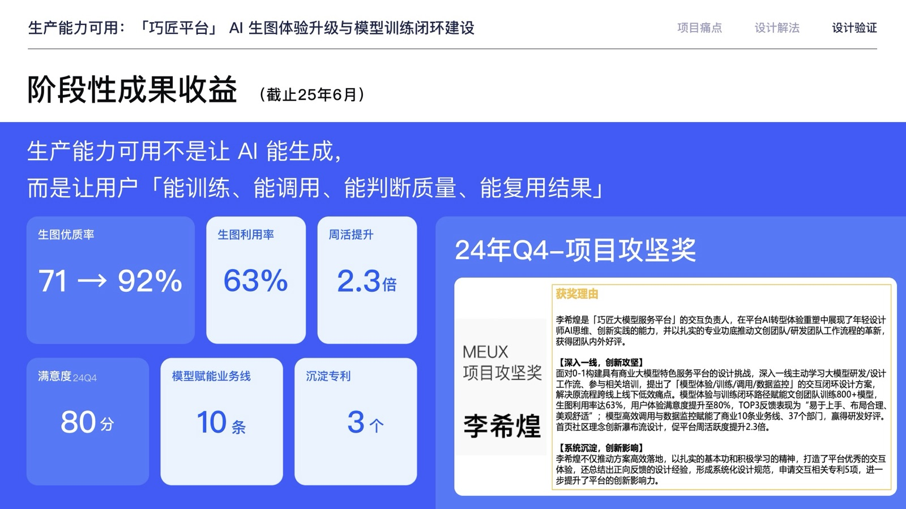
怎么分工：AI 负责训练和出图；人只判断结果能不能用：训练 → 调用 → 评估 → 复用
结果：优质率 71% → 92% · 赋能 10 条业务线
留下的能力：把模型能力变成用户能理解、能确认结果的流程
图片 Agent 的需求补充与质量检查；设计规范写成可复用的 Skill
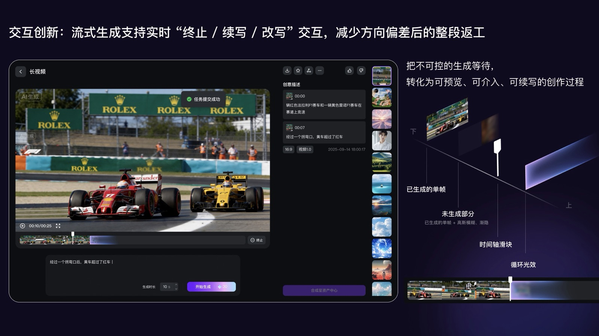
怎么分工：AI 边生成边出内容；人随时看方向，能终止、续写、改写
结果：满意度 81.4 · 两个月并行支撑 11 个模块
留下的能力：多能力用一个框架承接；生成越贵，越要让用户早介入
超级输入框统一入口；视频分阶段确认与跨阶段回改
怎么分工：AI 组织整条流程；用户只在关键节点做判断（Agent + Workflow）
结果：下一页起展开
留下的能力：把前两代的判断合在一起，从"能生成"推进到"能生产"
可控的结果 + 可介入的过程 = 用户能用 AI 做生产
以成都百都为例：独代端口第一，擎舵日均消费 64 万，客户 50% 是医疗。他们的原话是“提效是核心，AI 只是手段”。但做一张图要在擎舵、豆包、PS、基木鱼之间来回切；2.0 的 22 个工具彼此独立，客户开始转向外部工具。
工具繁多不知从哪开始；B 类用户不会写 prompt，生活服务平均 45.7 字，保存率仅 1.2%
营销图要填 6 项参数；创编大师 10～15 分钟一条，还会解析失败
“生成的图不可二次编辑”是调研中被提及最多的痛点；客户希望每一步都能继续调整
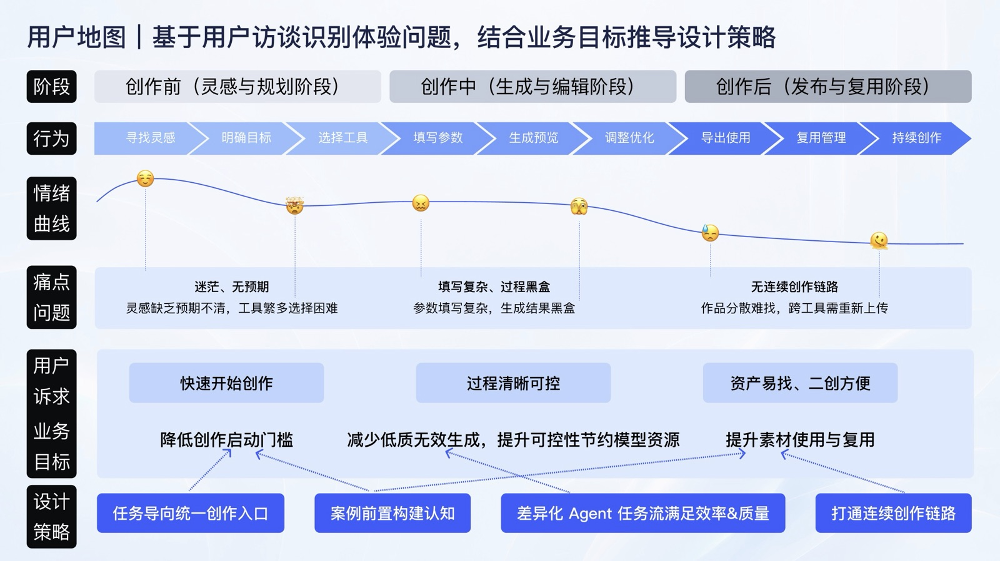
为什么：客户要的是能投放的成品，“提效是核心，AI 只是手段”。2.0 的能力已经够用，问题是把营销目标翻译成工具和参数的活，全落在用户身上。
用户只需要讲清要什么；工具怎么选、参数怎么填，交给 Agent 补齐，再请用户确认。
反面：营销图要填 6 项参数；说不清的用户，保存率只有 1.2%
先在几秒就能改的图文上确认方向，再进入几十分钟的合成。
反面：一次跑到底，方向偏了只能整条重来
AI 一次做不到可投放，可改才可用。结果原位可编辑、可续编，是下一轮的起点。
反面：“生成的图改不动”，是调研中被提到最多的痛点
同一个问题，我也问了自己的团队：设计交付里，哪些交给 AI 执行，设计师在哪儿把关？这是第二章。
→ 第二章擎舵用户有一定设计和工具基础，广告创作对需求表达、流程控制和持续修改都有要求。我调研了主流 Agent 产品形态，逐一判断优劣。
门槛低，但要靠描述技巧反复对话，改不动分镜和脚本细节
步骤可回溯、可原位编辑，但生成中输入框失效，任务不可打断、不可衍生
对话负责理解需求，页面负责逐步确认；左侧看过程，右侧改结果
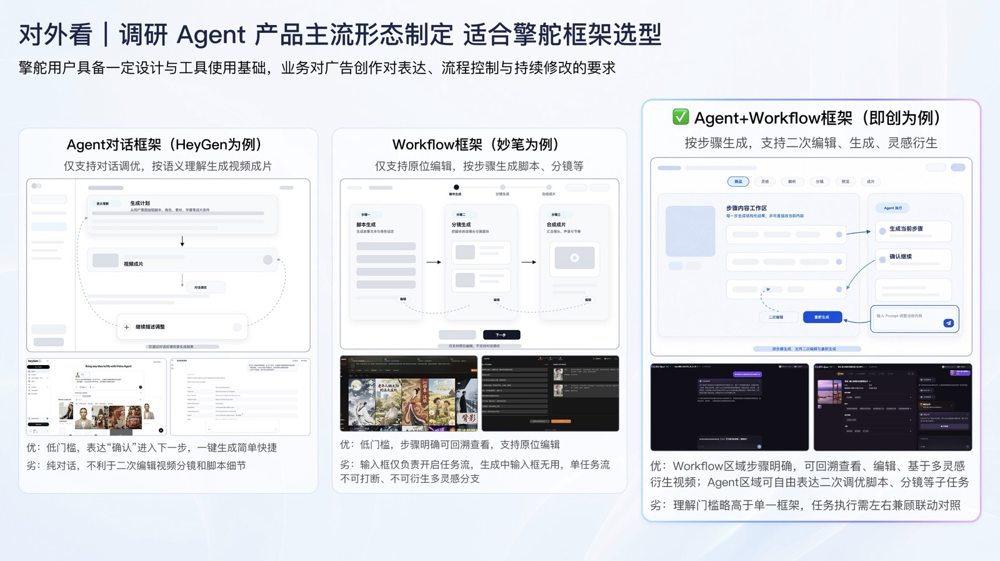
2.0 按工具组织能力，用户要先判断“该用哪个工具”。3.0 我把入口改为按任务组织：说出营销目标就能开始，熟练用户的直达路径保留。
把分散工具合到一个入口，由输入框统一调用；侧栏让空间给创作；高频工具保留直达入口，案例先展示结果
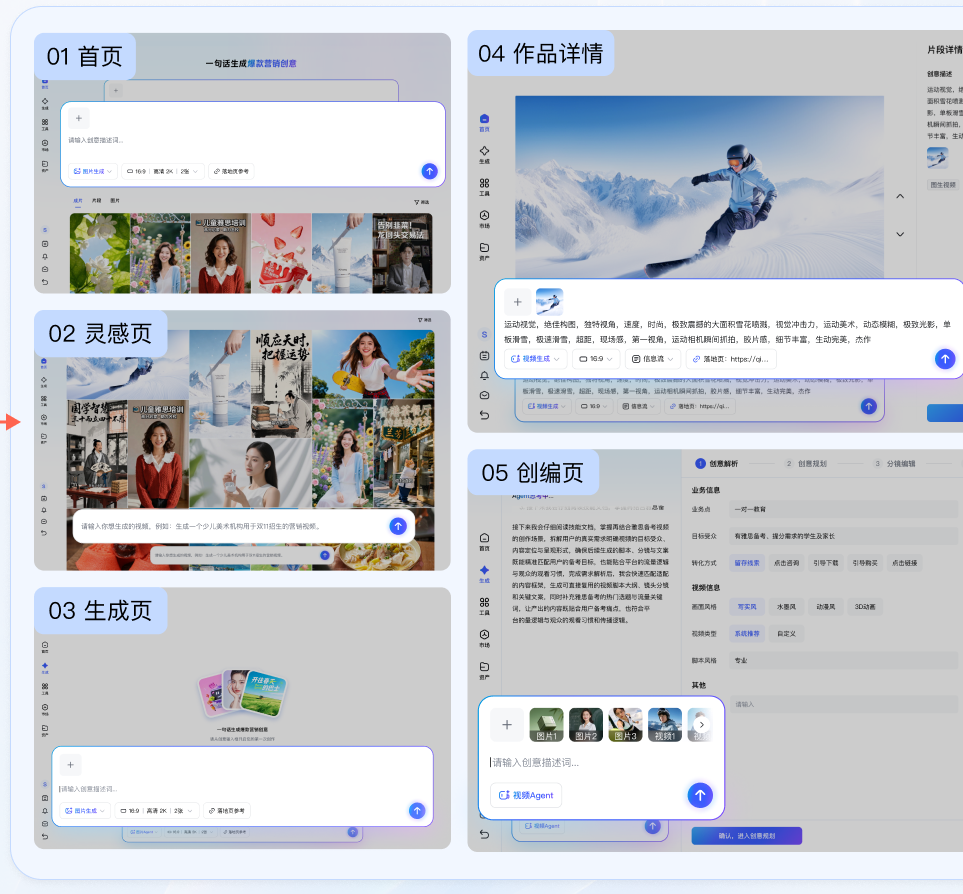
首页、灵感、生成、详情、创编页共用 4 种输入形态和同一套规则，在哪都能接着说
路径和单屏数为设计走查结果。产出成片任务是整条链路的结果，账户 696→698 基本持平；首页的贡献是让任务更容易开始，不单独归因。
调研发现：代理商在豆包上做图，75% 的操作是二次编辑。我把 5+ 步表单改成对话，先帮用户说清目标，再直接基于结果继续修改。
说不清需求的用户最吃亏：生活服务类 prompt 平均 45.7 字，保存率仅 1.2%；“生成的图改不动”是调研中被提到最多的痛点
输入框承接图、文、落地页混合输入，AI 自动补充缺少的参数，不用先学参数
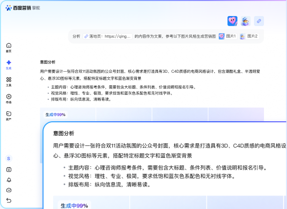
先补充主题、风格、布局给用户确认，过程可见、可打断，减少来回解释
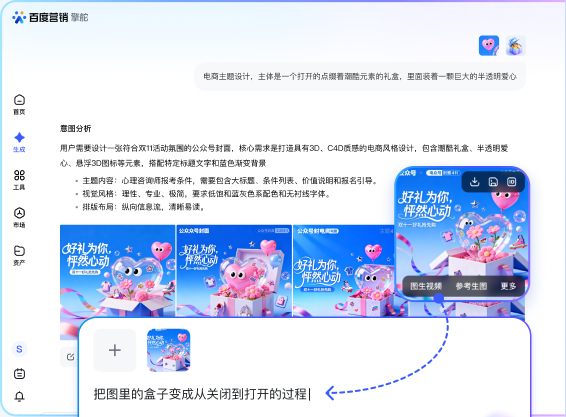
结果旁直接续改、参考生图、图生视频，一句话接着改，不用换工具
账户规模持平；耗时下降有模型与工程贡献，质量由我负责的输入设计和生成侧 Skill 共同影响。图片保存率 7.6%→6.4% 未改善，是下一轮要解决的问题。
视频试错代价最高：一条等 10～15 分钟，偏了只能重来。我把链路拆成四个可确认的阶段，左侧对话推进，右侧原位编辑。
合成发生在用户确认之前，每次纠偏都要付出一次完整合成的时间和成本
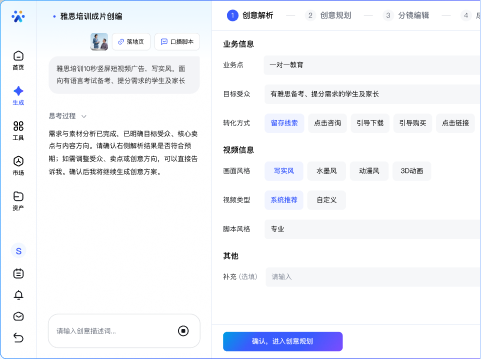
先把业务点、受众和风格说清，减少大方向跑偏
人物与剧本大纲用图文确认，几秒就能改
逐镜原位改脚本和画面；改了角色或台词，配音字幕自动同步
先确认成片设置，再进入最后的高成本合成
7 月为产研内部试用（视频 29 个账户），只用来看比例；人均成片为 9→10 月。10 月视频发起→创意解析只有 54%，入口是下一步要优化的地方。
先补充需求再生成：一次说清楚，减少来回解释
输入时帮用户说清楚，生成后支持继续修改
把生成过程展示出来：等待时知道进行到哪一步
LUI + GUI 分阶段：每一步都能及时改方向
成片设置前置确认：最贵的一步放到最后，方向已定准
结果页支持继续修改：这次结果直接进入下一轮
数据里的新问题：10 月视频发起量涨到 11,597，但只有 54% 进入创意解析，人均发起 6 次 → 17 次，用户在第一步反复尝试。下一步把图片已验证的「案例前置 + 需求补充」延伸到视频入口。
窗口：7 月是内部试用（视频 29 个账户），只用来看视频漏斗比例；耗时、下载、中止、人均都用 9 → 10 月比（账户 696 → 698，规模接近）。人数增长来自放量，不计入设计贡献。
12% 低价值需求完全标准化，56% 中价值需求 80% 内容可套用组件和规范，仍靠设计师重复手搓。
间距、字号、颜色不合规每个需求都会出现，依赖人工审查，发现滞后。
其中 40% 是间距、颜色等样式问题；Q2 还有 10+ 个需求被 PM 绕过设计直接上线。
擎舵首页和视频 Agent 一轮走查 148 个问题，92 个是“设计稿转代码”的样式损耗。Agent 的思考过程、生成中这些动态状态，静态稿也画不清；迭代又快，串行交付跟不上业务。
看起来一样，本质还是设计稿：能点，但接不上真实数据，开发还得重做。
长在真实产品里，接得上数据、跑得了业务，做完就能上线。擎舵交付的是这一种。
擎舵 3.0 有对话、分阶段确认、继续修改和异常恢复。只交一张设计图，设计师和研发看到的体验容易不一致；所以我把交付方式改成“先写清规则、在真实页面共同确认、再根据结果更新规则”。
静态画面能说明结构，难说明动态状态
研发在真实页面里重新组织交互和样式
问题集中出现，体验容易在交接中走样
规则交给 AI 执行，设计师在目标、关键状态和真实页面上把关。
从“给研发看的稿”到“可运行、可评审、可继续实现的页面”
把任务、结构、状态和样式写进 Skill
在项目里直接试用，三方看同一个效果
上线后看数据，继续修改规则和下一轮需求
这条链路的关键变化，是设计师直接在真实项目里确认体验；每一步都留下可继续接手的结果。
从业务仓库和已有组件开始，避免重新造一套
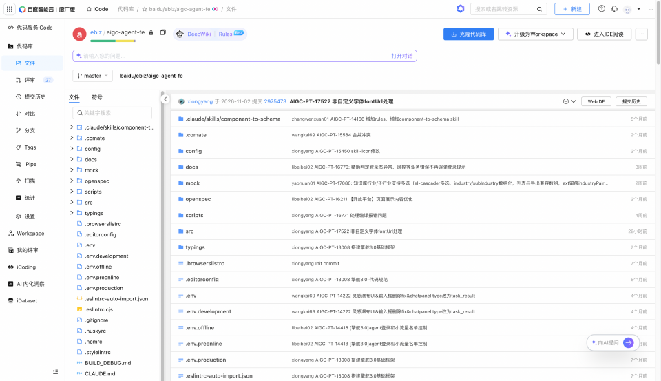
已有项目、组件和规则成为 1→N 的基础。
Skill 辅助生成符合规则的结构和样式
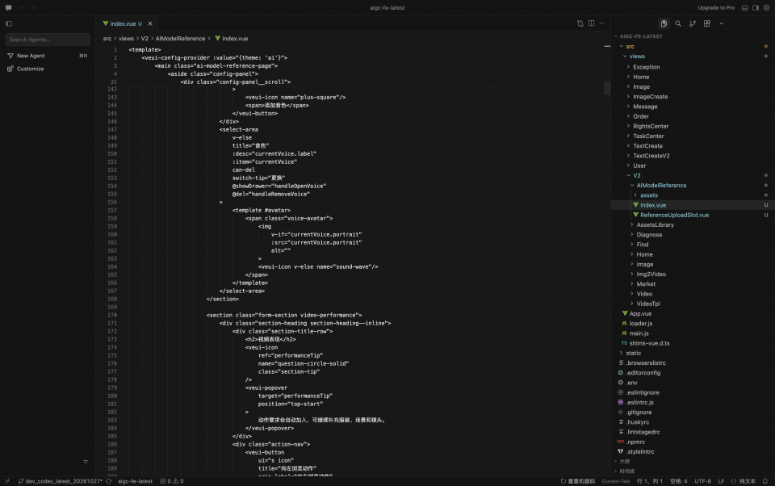
AI 执行重复制作，设计师关注任务和关键状态。
产品、设计、研发在可运行页面上共同确认
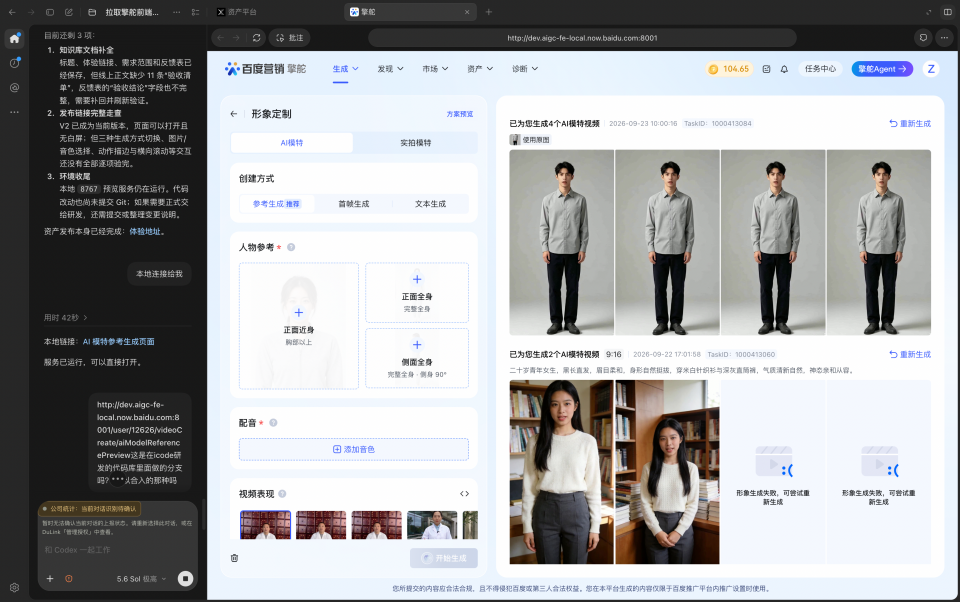
改动及时确认，避免静态稿和实际页面各说各话。
走查体验，研发完成工程审核和发布
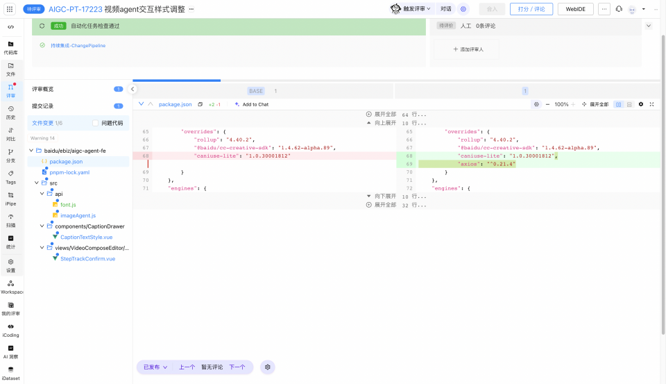
交付物是生产级代码，设计意图可以直接进入产品。
真正决定 AI 能做多少的，不是“新不新”，而是需求是否清楚、规则是否够用、页面是否已有基础。
生成改动
三方看页面
视觉与开发
继续更新规则
明确任务和状态
组件、页面、动效
共同确认
生产代码
先对齐方向
明确转入路径
再做生产交付
交付不是让 AI 一路自动跑完，而是把“什么时候交给 AI、什么时候由人确认、结果怎么回来看”写清楚。
用户、任务、业务目标和观察点
判断复用、探索和实现边界
AI 辅助，三方看同一个页面
把已经确认的体验交给研发接入
按用户任务走查，发现偏差就回改
数据和反馈决定下一轮怎么改
重要操作变化 → 共同确认 → 接入真实功能 → 再检查体验有没有走样。
业务数据与用户反馈 → 判断改善 / 未改善 → 有效做法写回规则，新问题回到第 1 步。
我把擎舵的实践拆成规则、工具、真实页面和检查方式，宣讲后向其他业务簇开放；各业务推进状态不同，按实际采用记录。
规范、Skill、真实页面评审、生产代码交付
宣讲操作步骤、确认时机和踩坑经验
不是把人变成复制品，而是让判断有共同的起点。
投放、巧舱、安客、爱采购等开始使用
新组件、新做法和新问题回到 Skill 与 SOP
我把项目中的交互判断整理成可复用的设计资产，并在团队内分享。
智能体对话与代码分屏、对话与页面联动、文生图提示词解析等
London Design Awards、MUSE Design Awards 2025 金奖
商业体验小课堂：AI 助手融入交互浅谈
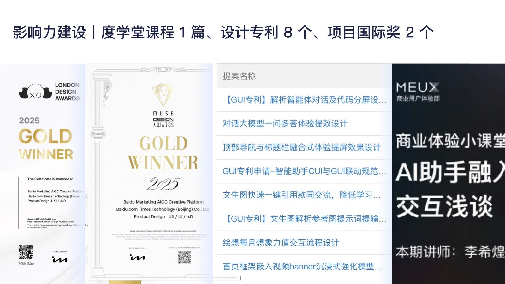
先在客户的创作里，再在我们自己的交付里；每一轮用业务和用户的数据，决定下一次怎么分。负责的范围也从一个项目，扩大到一个平台和整个团队。
把模型能力翻译成用户能控制的流程；学会让用户在生成中及时介入
全程主导首页、输入、对话、图片和视频，交互与 UI 一人完成
擎舵先跑通，再推广到 B 端 23 个平台和 13 个业务簇
看板数据告诉我该改什么：10 月视频入口只有 54% 进入创意解析，下一步先优化入口
它把散落在数据、业务知识、设计规范、页面交付和上线结果里的信息串成一条工作链。AI 负责整理、生成和检查；设计师负责方向、取舍和验收。
目标、看板、用户反馈
定位用户卡在哪一步
结合知识形成方案草案
调用 Skill 生成页面或代码
设计 × 产品 × 研发共同把关
按真实结果保留、修正或停用
看板数据、业务知识、设计规范 Skill、真实页面交付、人工验证记录。
从一个用户问题开始，连起方案、页面、研发接收、上线版本和结果。
能辅助判断、执行交付、根据结果修正经验的数字员工系统。
数字员工的价值不在“自动生成了多少”，而在于团队能不能更早发现问题、更稳定交付体验、更清楚地知道结果是否有效。
把目标、数据、业务知识、设计任务和人工验证放在一起。
能说清用户、场景、问题依据和替代解释。
选一个真实需求，完整走过评审、页面、代码、检查和研发接收。
同一需求留下周期、质量问题和上线版本记录。
记录来源、适用范围、反例和版本；有效经验复用，无效建议可修正或回退。
同类任务有可比较结果，团队能独立使用并知道何时停用。
先懂业务流程，再定页面框架，再选组件，最后守住全局样式。每一层都对应一个 AI 直出时真实出现过的问题。
AI 不懂擎舵的创作链路，不知道什么时候该澄清、什么时候该直接生成
澄清策略 · 对话页规范
交互设计说明、视频 Agent 规则
详情页、版本历史、复杂弹窗这类组合模块没有规范，AI 自由发挥
详情页规范 · 页面规则
Figma 页面 MCP 拆解模块层级
新平台组件和设计系统不一致，局部一改就产生新的视觉偏差
组件规范 + 组件索引
Figma 组件库 MCP 读取类型、尺寸、状态
间距、字号、颜色不合规，每个需求都会出现
Design Token + Layout
读现有代码提炼吸顶、断点、动效